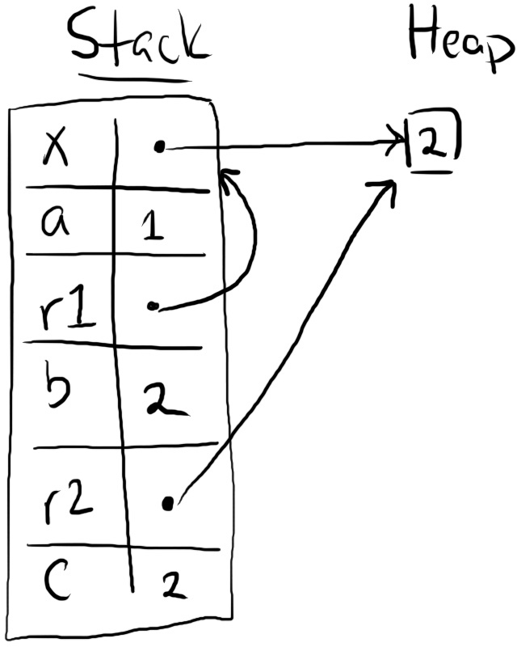
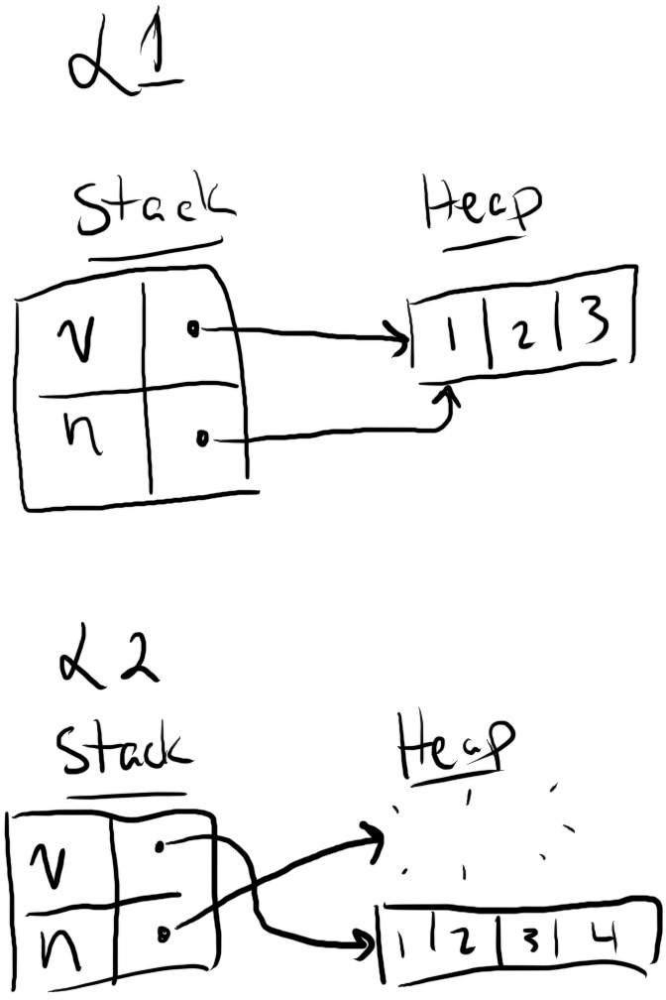

References and Borrowing
Ownership, boxes, and moves provide a foundation for safely programming with heap data. However, move-only APIs can be inconvenient to use. For example, say you want to read a string to print it out:
fn main() { let m1 = String::from("Hello"); let m2 = String::from("world"); greet(m1, m2); // We can't use `m1` or `m2` anymore! } fn greet(g1: String, g2: String) { println!("{} {}!", g1, g2); }
In this example, calling greet moves m1 and m2 into greet. Both strings are dropped at the end of greet, and therefore cannot be used within main.
This move behavior is extremely inconvenient. Programs often need to use a string more than once. Hypothetically, an alternative greet can return ownership of the strings:
fn main() { let m1 = String::from("Hello"); let m2 = String::from("world"); let (m1, m2) = greet(m1, m2); // We can use `m1` and `m2` here... but at what cost? } fn greet(g1: String, g2: String) -> (String, String) { println!("{} {}!", g1, g2); (g1, g2) }
However, this style of program is quite verbose. Rust provides a more concise style of reading and writing movable objects with references.
References Are Non-Owning Pointers
A reference is a kind of pointer. Here's an example of a reference that rewrites our greet program in a more convenient manner:
fn main() { let m1 = String::from("Hello"); let m2 = String::from("world"); // L1 greet(&m1, &m2); // note the ampersands // L3 } fn greet(g1: &String, g2: &String) { // note the ampersands // L2 println!("{} {}!", g1, g2); }
The expression &m1 uses the ampersand operator to create a reference to m1. The type of g1 is also changed to &String, meaning "a reference to a String". At runtime, the references look like this:

Observe at L2 that there are two steps from g1 to the string "Hello". g1 is a reference that points to m1 on the stack, and m1 is a String containing a box that points to "Hello" on the heap.
While m1 owns the heap data "Hello", g1 does not own either m1 or "Hello". Therefore after greet ends and the program reaches L3, no heap data has been deallocated. Only the stack frame for greet disappears. This fact is consistent with our Moved Heap Data Principle: because g1 did not own "Hello", Rust did not deallocate "Hello" on behalf of g1.
References are non-owning pointers, because they do not own the data they point-to.
Dereferencing a Pointer Accesses Its Data
The previous examples using boxes and strings have not shown how Rust "follows" a pointer to its data. For example, the println! macro has mysteriously worked for inputs that were both plain strings of type String, and references to strings of type &String. The underlying mechanism is the dereference operator, written with an asterisk (*). For example, here's a program that uses dereferences in a few different ways:
fn main() { let mut x: Box<i32> = Box::new(1); let a: i32 = *x; // *x reads the heap value, so a = 1 *x += 1; // *x on the left-side modifies the heap value, x points to the value 2 let r1: &Box<i32> = &x; // r1 points to x on the stack let b: i32 = **r1; // two dereferences get us to the heap value let r2: &i32 = &*x; // r2 points to the heap value directly let c: i32 = *r2; // so only one dereference is needed to read it }
And here is the state of memory at the end of the program:

Observe the difference between r1 pointing to x on the stack, and r2 pointing to the the heap value 2.
You probably won't see the dereference operator very often when you read Rust code. This is because Rust implicitly inserts both dereferences and references in certain cases, such as calling a method with the dot operator. For example, this program shows two equivalent ways of calling the i32::abs (absolute value) and str::len (string length) functions:
fn main() { let x: Box<i32> = Box::new(-1); let r: &Box<i32> = &x; let n1: i32 = r.abs(); // implicit dereference let n2: i32 = i32::abs(**r); // explicit dereference assert_eq!(n1, n2); let s = String::from("Hello"); let n1 = s.len(); // implicit reference let n2 = str::len(&s); // explicit reference assert_eq!(n1, n2); }
The i32::abs function expects an input of type i32, so by providing an &Box<i32>, Rust will insert two dereferences. The str::len function expects an input of type &str, so by providing an owned String, Rust will insert a single reference.
We will say more about method calls and implicit conversions in later chapters. For now, the important takeaway is to recognize that these conversions are happening, especially with method calls. We want to unravel all the "magic" of Rust so you can have a clear mental model of what happens at runtime.
Rust Avoids Simultaneous Aliasing and Mutation
Pointers are a powerful and dangerous feature because they enabling aliasing: accessing the same data through different variables. On its own, aliasing is harmless. But combined with mutation, we have a recipe for disaster. One variable can "pull the rug out" from another variable in many ways, for example:
- By deallocating the aliased data, leaving the other variable to point to deallocated memory.
- By mutating the aliased data, invalidating runtime properties expected by the other variable.
- By concurrently mutating the aliased data, causing a tricky data race with nondeterministic behavior for the other variable.
Therefore Rust follows a basic principle to prevent undefined behavior:
Pointer Safety Principle: data should never be aliased and mutated at the same time.
Data is allowed to be aliased. Data is allowed to be mutated. But data is not allowed to be both aliased and mutated. For example, Rust enforces this principle for boxes (owned pointers) by disallowing aliasing. Assigning a box from one variable to another will move ownership, invalidating the previous variable. Owned data can only be accessed through the owner — no aliases.
However, references need different rules to enforce the Pointer Safety Principle because they are non-owning pointers. By design, references are meant to temporarily create aliases. In the remainder of this section, we will explain the basics of how Rust ensures the safety of programs with references.
References Change Permissions on Paths
The core idea is that variables have three kinds of permissions on their data:
- Read (
R): data can be copied to another location. - Write (
W): data can be mutated in-place. - Own (
O): data can be moved or dropped.
These permissions don't exist at runtime, only within the compiler. They describe how the compiler "thinks" about your program before the program is ever executed.
By default, a variable has read/own permissions (RO) on its data. If a variable is annotated with let mut, then it also has write permissions (W). The key idea is that references can temporarily remove these permissions. Here is a simple example that is annotated with changes in permissions after each line in the program:
fn main() {
let mut x = 1;
let y = &x;
println!("{} = {}", x, *y);
x += 1;
}
Let's walk through each line:
- After
let mut x = 1, the variablexhas been initialized (indicated by ). It gains read/write/own permissions. - After
let y = &x, the variablexhas been borrowed byy(indicated by ). Three things happen:- The borrow removes write/own permissions from
x: it cannot write or own its data, but it can still read its data. - The variable
yhas gained read/own permissions.yis not writable because it was not markedlet mut. - The path
*yhas gained read permissions.
- The borrow removes write/own permissions from
- After
println!("{} = {}", x, *y),yis no longer in use, andxis no longer borrowed. Therefore:xregains its write/own permissions (indicated by ).yand*yhave lost all of their permissions (indicated by ).
- After
x += 1,xis no longer in use, and it loses all of its permissions.
Permissions are not just defined on variables (like x or y), but also on paths (like *y). A path is anything you can put on the left-hand side of an assignment. Paths include:
- Variables, like
a. - Dereferences of paths, like
*a. - Array accesses of paths, like
a[0]. - Fields of paths, like
a.0for tuples ora.fieldfor structs (discussed next section). - Any combination of the above, like
(*a)[0].1.
For example, here's a program that shows how you can borrow one field of a tuple, and write to a different field of the same tuple:
fn main() {
let mut x = (1, 2);
let y = &x.0;
x.1 += 1;
println!("{:?} {}", x, y);
}
The statement let y = &x.0 borrows x.0 which removes write/own permissions from x.0 and x. However, x.1 still retains write permissions, so doing x.1 += 1 is a valid operation.
Returning to the Pointer Safety Principle, the goal of these permissions is to ensure that data cannot be mutated if it is aliased. Creating a reference to data ("borrowing" it) causes that data to be temporarily read-only until the reference is no longer used.
The Borrow Checker Finds Permission Violations
Rust uses these permissions in its borrow checker. The borrow checker determines whether a program is doing potentially unsafe operations involving references. For example, let's say we moved the x += 1 statement in-between the definition of y and the use of *y, like this:
fn main() {
let mut x = 1;
let y = &x;
x += 1;
println!("{} = {}", x, *y);
}Then the Rust compiler will reject this program with the following error:
error[E0506]: cannot assign to `x` because it is borrowed
--> src/main.rs:4:1
|
3 | let y = &x;
| -- borrow of `x` occurs here
4 | x += 1;
| ^^^^^^ assignment to borrowed `x` occurs here
5 | println!("{} = {}", x, *y);
| -- borrow later used here
This error reflects the fact that x does not have write permissions in-between let y = &x and println!(..).
Now you may think that Rust is being overzealous here — what's the harm in incrementing x? That won't affect the reference y. But here is a similar example with an actual safety issue:
fn main() {
let mut v = vec![1, 2, 3];
let n = &v[0];
// L1
v.push(4);
// L2
println!("{:?}, {}", v, *n);
}Depending on the capacity of v, this program could potentially have the following states at L1 and L2:

The function v.push(4) could resize v, deallocating its original contents. This operation would invalidate the reference n, leading it to point to deallocated memory. The subsequent read of *n would therefore be undefined behavior.
Thankfully, Rust rejects this program. The statement &v[0] borrows the vector v, which removes write permissions from v, so v.push(4) is flagged as a permissions violation.
In sum, Rust's borrow checker prevents all unsafe uses of references (like v.push(4)). However, it also prevents some safe uses of references (like x += 1). That is an important point: just because Rust rejects your program does not mean your program is definitely unsafe!
Fixing a Borrow Checker Error Depends on the Safety of the Program
Understanding the distinction between safe and unsafe uses of references will help you deal with Rust compiler errors. Safe operations can often be rewritten using data structures designed to work around Rust's limitations. For example, you could rewrite the x += 1 program using a different construct like a Cell or an AtomicUsize:
use std::cell::Cell; use std::sync::atomic::{Ordering, AtomicUsize}; fn main() { let x = Cell::new(1); let y = &x; x.set(x.get() + 1); println!("{} {}", x.get(), y.get()); let x = AtomicUsize::new(1); let y = &x; x.fetch_add(1, Ordering::SeqCst); println!("{} {}", x.load(Ordering::SeqCst), y.load(Ordering::SeqCst)) }
We will cover these constructs in detail in later chapters. For now, the takeaway is that there are constructs specialized for safely working around limitations of the borrow checker.
Unsafe operations cannot generally be fixed with a straightforward rewrite. For example, you simply cannot hold a reference to a vector's element while also resizing the vector. In this setting, one fix would be to hold the numeric index of an element, but not an actual reference, like this:
fn main() { let mut v = vec![1, 2, 3]; let n_idx = 0; v.push(4); println!("{:?}, {}", v, v[n_idx]); }
Or to move the borrow after the mutation, like this:
fn main() { let mut v = vec![1, 2, 3]; v.push(4); let n = &v[0]; println!("{:?}, {}", v, *n); }
The right solution will naturally depend on the specific circumstances of your codebase. But at the very least, whenever you get an error from Rust's borrow checker, you should ask: is my code actually unsafe? The answer will guide how you can change your code to satisfy Rust.
Mutable References Provide Unique and Non-Owning Access to Data
The references we have seen so far are read-only: immutable references (also called shared references). These references permit aliasing but disallow mutation. However, it is also convenient to be able to temporarily provide mutable access to data without moving it. For example, the Vec::push should add an element to a vector without consuming ownership of the vector.
The mechanism for this is mutable references (also called unique references). Here's a simple example of a mutable reference with the accompanying permissions changes:
fn main() {
let mut x = 1;
let y: &mut i32 = &mut x;
*y += 1;
println!("{x}");
}
A mutable reference is created with the syntax &mut x. The type of y is written as &mut i32. You can see two important differences in the transfer of permissions compared to the previous example:
- When
ywas an immutable reference,xstill had read permissions. Now thatyis a mutable reference,xhas lost all permissions whileyis in use. - When
ywas an immutable reference, the path*yonly had read permissions. Now thatyis a mutable reference,*yhas also gained write permissions.
The first observation is what makes mutable references safe. Mutable references allow mutation but prevent aliasing. The borrowed path becomes temporarily unusable (i.e. effectively not an alias).
The second observation is what makes mutable references useful. x can be mutated through *y. For example, *y += 1 adds 1 to x.
Mutable references can also be temporarily "downgraded" to read-only references. For example:
fn main() {
let mut x = 1;
let y = &mut x;
let z = &*y;
println!("{y} {z}");
}
In this program, the operation &*y removes the write permission from *y but not the read permission, so println!(..) can read both *y and *z.
Data Cannot Be Mutably and Immutably Borrowed
To borrow from a path, that path must have the appropriate permissions: R for an immutable reference, and RW for a mutable reference. A common source of borrow checker errors is trying to borrow data without enough permissions, for example:
fn main() {
let mut x = 1;
let y = &x;
let z = &mut x;
*z += 1;
println!("{}", y);
}
If you try to compile this program, Rust will return the following error:
error[E0502]: cannot borrow `x` as mutable because it is also borrowed as immutable
--> src/main.rs:4:13
|
3 | let y = &x;
| -- immutable borrow occurs here
4 | let z = &mut x;
| ^^^^^^ mutable borrow occurs here
5 | *z += 1;
6 | println!("{}", y);
| - immutable borrow later used here
You can see this error reflected in the permissions. The statement let y = &x removes write permissions from x. Therefore Rust finds a problem with the expression &mut x, because &mut requires write permissions.
Permissions Are Returned At The End of a Reference's Lifetime
Previously, we explained that that a reference changes permissions while the reference is "in use". The phrase "in use" is describing a reference's lifetime, which is the range of code spanning from its birth (where the reference is created) to its death (the last time(s) the reference is used).
For example, in this program, the lifetime of y starts with let y = &x, and ends with let z = *y:
fn main() {
let mut x = 1;
let y = &x;
let z = *y;
x += z;
}
The read permissions on x are returned to x after the lifetime of y has ended, like we have seen before.
In the previous examples, a lifetime has been a contiguous region of code. However, once we introduce control flow, this is not necessarily the case. For example, here is a simple function that capitalizes the first character in a vector of ASCII characters:
fn ascii_capitalize(v: &mut Vec<char>) {
let c = &v[0];
if c.is_ascii_lowercase() {
let c_up = c.to_ascii_uppercase();
v[0] = c_up;
} else {
println!("Already capitalized: {:?}", v);
}
}
Note that the lifetime of the character c starts with let c = &v[0]. c is then used in two places: the if condition, and the statement let c_up = (...). But c is not used inside the else block.
Therefore c has a different status in each branch. Going into the if-block, c is alive. It would be a permissions violation to mutate v before let c_up = (...). But going into the else-block, c is dead. v has full permissions.
In general, Rust will infer the lifetimes of references at the smallest granularity possible.
Data Must Outlives All Of Its References
One final safety property for references is that data must outlives its references. For example, consider this function that adds a reference to a vector of references:
fn add_ref(v: &mut Vec<&i32>, n: i32) {
let r = &n;
v.push(r);
}Rust will reject this function with the following error:
error[E0597]: `n` does not live long enough
--> src/lib.rs:2:13
|
1 | fn add_ref(v: &mut Vec<&i32>, n: i32) {
| - let's call the lifetime of this reference `'1`
2 | let r = &n;
| ^^ borrowed value does not live long enough
3 | v.push(r);
| --------- argument requires that `n` is borrowed for `'1`
4 | }
| - `n` dropped here while still borrowed
The argument n only lives for the duration of add_ref. However, the reference r is being pushed into v, and v lives longer than add_ref. Therefore Rust complains that the data (n) does not outlive all of its references (r).
If this function were allowed, we could call add_ref like this:
let mut v = Vec::new();
add_ref(&mut v, 0);
println!("{}", v[0]);Then v would contain a reference that points to deallocated memory, and printing v[0] would violate memory safety.
Summary
References provide the ability to read and write data without consuming ownership of it. References are created with borrows (& and &mut) and used with dereferences (*), sometimes implicitly.
However, references can be easily misused, so Rust provides a system of permissions to verify that programs use references safely:
- All variables can read, own, and (optionally) write their data.
- Creating a reference will transfer permissions from the borrowed path to the reference.
- Permissions are returned once the reference's lifetime has ended.
- Data must outlive all references that point to it.
In this section, it probably feels like we've described more of what Rust cannot do than what Rust can do. That is intentional! One of Rust's core features is enabling you to use references safely but without garbage collection. Understanding these safety rules now will help you avoid frustration with the compiler down the road.